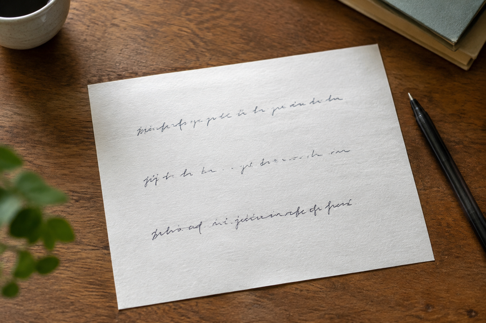

武汉连续手写记录里，行距忽宽忽窄说明什么
看似不整齐的行距，有时只是自然书写推进到页尾后的调整。

把变化放回整页
武汉模仿笔迹样本若只看中间一行，很难知道前后文字是否为了避开页边、表格或涂改而收紧。完整页能交代空间约束。
观察节奏而非找完美行
自然书写会有停顿、连写和反复修改。对比模仿签名、模仿签字时，也应看多次签写的共同结构，不要把某次特别流畅的结果当成唯一标准。
材料先排除图像干扰
笔迹鉴定资料中，透视拍摄会把一侧行距拉宽。拍照时保持镜头平行纸面，补一张整页正面图；无法重拍的资料应标注拍摄条件。